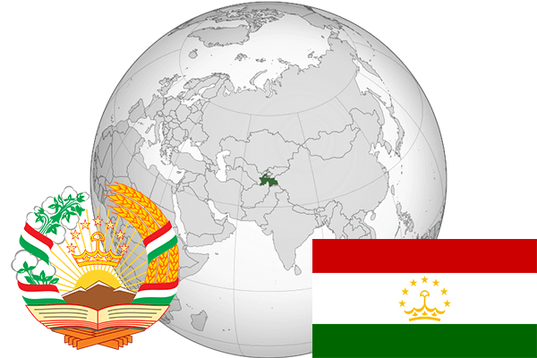

To`liq nomi: Tojikiston Respublikasi
Region: O’rta Osiyo
Qonunchilik shakli: Respublika
Mustaqillik kuni: 9-sentyabr 1991-yil
Poytaxt: Dushanbe
Maydoni: 142 000 km²
Chegaradosh davlatlari: O’zbekiston, Qirg’iziston, Xitoy, Afg’oniston
Aholisi: 8 551 200 (2016-yil)
Aholi zichligi: 60,0/км²
Aholining o`rtacha yoshi: 69,80 yil
Rasmiy tili: Tojik tili
Dini: Islom
Pul birligi: Tojikiston somoni
Telefon prefiksi: +992
Internet domen: .tj
Xalqaro tashkilotlarga a`zoligi: BMT, SHHT
Dengiz va okeanlarga chiqishi: Yo’q
YIM: Butun: $8,5 mlrd.(2013-yil) Jon boshiga: $1041
Yirik shaharlari: Dushanbe, Xo’jand